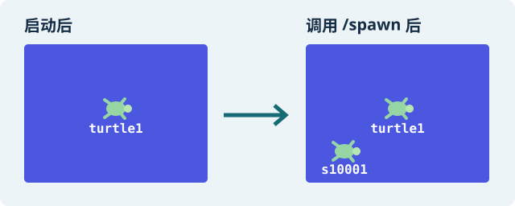
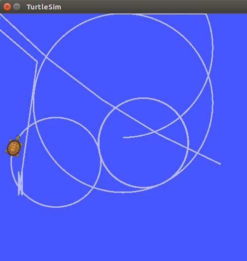
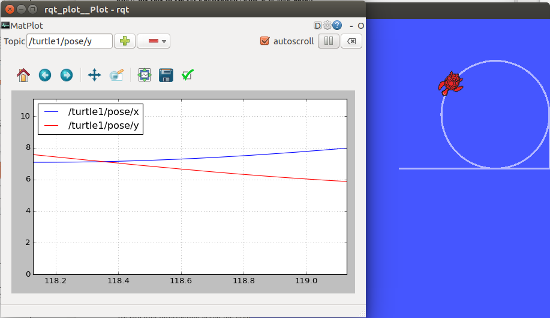

本章目标
在 ROS 1 Noetic TurtleSim 中认识节点、话题、服务和消息，调用生成、传送、删除服务，建立 catkin 功能包并观察定时画圆。全章只用本机仿真 master 127.0.0.1:11431，不连接实体车。
依赖：使用交付的 Ubuntu-A 控制机与 ROS 1 Noetic Docker 环境；课程脚本和本章资料位于同级“实验文件”中，按该目录说明核对并运行软件检查。
准备：分清终端
命令来自课程 robot_labs/lab.sh 和操作指南。入口命令 bash lab.sh … 在 Ubuntu 本地终端执行；ROS 查询在 sim-shell 容器中执行。每个新 Ubuntu 终端先进入 ~/robot_labs。
操作步骤：从启动到停机
检查课程软件
Ubuntu 本地终端 A在 Ubuntu 终端进入套件目录并检查软件：
cd ~/robot_labs bash lab.sh health继续：显示
SOFTWARE_CHECK_PASS。这是离线检查，不是实车结果；失败时按套件指南处理。启动 TurtleSim
Ubuntu 本地终端 A启动 TurtleSim 并保持该终端：
cd ~/robot_labs bash lab.sh sim继续：蓝色窗口出现默认 turtle1。入口已启动本机 master，不要另开 roscore。
打开仿真 shell
Ubuntu 本地终端 B另开终端进入仿真容器，确认 ROS 发行版和 master：
cd ~/robot_labs bash lab.sh sim-shell echo "$ROS_DISTRO $ROS_MASTER_URI"继续：显示 Noetic 和本机 11431；显示小车地址/11311 就退出重开。
查询节点
仿真容器 shell查询节点和连接信息：
rosnode list rosnode info /turtlesim观察 /turtlesim、/rosout 及发布订阅信息。
继续：两节点可见，turtlesim 提供 pose 与服务。
查询服务和话题
仿真容器 shell查询服务、话题和 pose 连接：
rosservice list rostopic list rostopic info /turtle1/pose继续：可见 /spawn、传送服务和 pose 话题。
查看 spawn 字段
仿真容器 shell查看 /spawn 服务类型、字段和参数：
rosservice type /spawn rossrv show turtlesim/Spawn rosservice args /spawn继续：确认字段 x、y、theta、name。
准备自己的名称
仿真容器 shell如果套件已设置
STUDENT_ID，可直接使用。否则在当前容器窗口设置一次自己的名称：把下面标出的示例值替换为只含字母、数字或下划线、且以字母开头的名称。export STUDENT_ID='s10001' echo "$STUDENT_ID"随后命令中的
$STUDENT_ID是 shell 变量引用；运行时 shell 会自动展开为上一步设置的值，不需要再把每个$STUDENT_ID改写。继续：名称仅含字母、数字、下划线，不含空格或斜杠。
生成自己的乌龟
仿真容器 shell调用 /spawn 创建自己的乌龟：
rosservice call /spawn "{x: 1.0, y: 1.0, theta: 0.0, name: '$STUDENT_ID'}"继续：服务返回自己的名称，窗口出现第二只乌龟。名称已存在时确认后复用或只删除自己的对象。

操作示意｜调用 /spawn 后应看到第二只。s10001 是示例名称，用自己的字母开头名称替换。 查看新对象 pose
同一个仿真容器 shell读取刚创建的海龟的位置、朝向和速度
rostopic echo -n 1 "/$STUDENT_ID/pose"$STUDENT_ID会自动取前面设好的名称。刚换了终端时，先重做「准备自己的名称」那一步。继续：收到一条 pose；无输出时核对服务返回名。
绝对传送
仿真容器 shell把自己的乌龟传送到绝对坐标：
rosservice call "/$STUDENT_ID/teleport_absolute" "{x: 2.0, y: 3.0, theta: 0.0}"继续：对象到约 (2,3) 并朝右。此服务直接设置位姿。
相对传送并复查
仿真容器 shell相对移动后读取新 pose：
rosservice call "/$STUDENT_ID/teleport_relative" "{linear: 2.0, angular: 1.57}" rostopic echo -n 1 "/$STUDENT_ID/pose"继续：位置约为 x=2、y=5、theta=1.57，末位可有浮点差异。
查询速度和消息类型
仿真容器 shell查看速度话题连接、消息类型和字段：
rostopic info "/$STUDENT_ID/cmd_vel" rostopic type "/$STUDENT_ID/cmd_vel" rosmsg show geometry_msgs/Twist rosmsg md5 geometry_msgs/Twist rosmsg show turtlesim/Pose继续：区分 Twist 控制和 Pose 状态；MD5 是定义标识，不是数据文件校验。
删除自己的对象
仿真容器 shell删除自己的对象，再确认默认 turtle1 仍在：
rosservice call /kill "{name: '$STUDENT_ID'}" rostopic list rosservice list继续：自己的相关话题/服务消失，默认 turtle1 仍在。
在中央重建对象
仿真容器 shell重新在中央附近创建自己的对象：
rosservice call /spawn "{x: 5.5, y: 5.5, theta: 0.0, name: '$STUDENT_ID'}"继续：自己的乌龟位于中央附近，服务返回名称正确。
创建 catkin 工作空间和包
仿真容器 shell套件将目录挂载到 /lab，运行：
mkdir -p /lab/student_ws/src cd /lab/student_ws/src catkin_init_workspace catkin_create_pkg learning_pkg rospy geometry_msgs turtlesim mkdir -p learning_pkg/scripts cp /lab/lab1_addon/circle_publisher.py learning_pkg/scripts/circle_node.py chmod +x learning_pkg/scripts/circle_node.py继续：包文件与脚本创建成功；这些容器路径不可在 Ubuntu 宿主机执行。
编译并确认包位置
仿真容器 shell编译工作空间并确认包路径：
cd /lab/student_ws catkin_make source devel/setup.bash rospack find learning_pkg继续：编译成功，路径指向 /lab/student_ws/src/learning_pkg。
启动定时画圆
仿真容器 shell启动画圆节点。程序约 1 Hz 发布 v=4、w=-2，约 24 秒后归零退出；Ctrl+C 也会触发停止：
export TURTLE_NAME="$STUDENT_ID" export DATA_DIR=/lab/data rosrun learning_pkg circle_node.py继续：打印对象名和 CSV 路径，乌龟转圈。速度值是仿真值。

教师任务书示例｜运行速度发布程序后，观察仿真窗口里的路径。 测量发布频率
另一个仿真容器 shell程序运行期间执行
rostopic hz "/$STUDENT_ID/cmd_vel"；收到多条样本并显示统计后按 Ctrl+C。继续：观察目标约 1 Hz，系统调度可能造成偏差。
用 rqt_plot 看位置
Ubuntu 本地终端打开 rqt_plot：
cd ~/robot_labs bash lab.sh plot在 rqt_plot 中添加
/$STUDENT_ID/pose/x与/$STUDENT_ID/pose/y。它显示变量随时间变化，不是平面轨迹图。继续：曲线随数据更新；空白时核对名称和 pose 来源。

教师任务书示例｜左边看运动路径，右边看位姿随时间变化。 用 rqt_graph 检查连接并停机
Ubuntu 本地终端检查连接图并在关闭图窗、程序退出后停止仿真：
cd ~/robot_labs bash lab.sh graph bash lab.sh stop找到速度发布者、cmd_vel、TurtleSim 和 pose 连接。保存图和 CSV。
收尾：发布者、图窗和 TurtleSim 都已关闭。
检查与留证
- 保存节点/服务查询、服务返回、编译输出和节点图。
- 保留 cmd.csv 与 pose.csv：前者是仿真命令，后者是 TurtleSim 反馈。
- 本章证明软件仿真过程，不证明实体车结果。
常见问题
- ROS 命令不存在：确认在 sim-shell 容器。
/spawn不可用：确认 sim 仍运行且 master 为 11431。- 名称已存在：只复用或删除自己的对象。
- 节点等不到 pose/订阅者：核对对象名和 TURTLE_NAME。
- 撞墙：停止发布、传送回中央并检查是否有其他发布者。
- 新 shell 变量为空：重新设置变量，环境不会跨窗口继承。
收尾
停止速度发布并确认归零，再关 rqt。Ubuntu 本地终端运行 cd ~/robot_labs、bash lab.sh stop。保留工作空间和 CSV，不删套件。
本章证据范围
命令来自课程 Noetic 容器套件和操作指南。仿真 master 11431 与实车 11311 分离。Ubuntu-A 提供 Noetic Docker；配套课程资料随同交付。离线检查、仿真与现场结果分别描述。